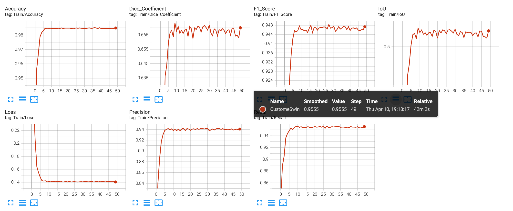
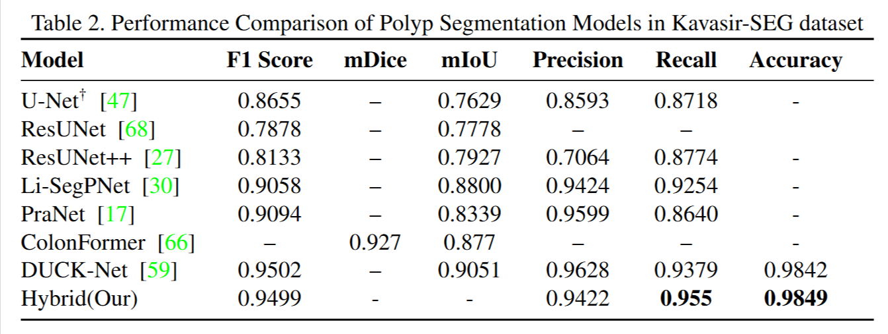

Abstract
Colonoscopy is still the main method of detection and segmentation of colonic polyps, and recent advancements in deep learning networks such as U-Net, ResUNet, Swin-UNet, and PraNet have made outstanding performance in polyp segmentation. Yet, the problem is extremely challenging due to high variation in size, shape, endoscopy types, lighting, imaging protocols, and ill-defined boundaries(fluid, folds) of the polyps, rendering accurate segmentation a challenging and problematic task. To address these critical challenges in polyp segmentation, we introduce a hybrid (Transformer + CNN) model that is crafted to enhance robustness against evolving polyp characteristics. Our hybrid architecture demonstrates superior performance over existing solutions, particularly in addressing two critical challenges: (1) accurate segmentation of polyps with ill-defined margins through boundary-aware attention mechanisms, and (2) robust feature extraction in the presence of common endoscopic artifacts including specular highlights, motion blur, and fluid occlusions. Quantitative evaluations reveal significant improvements in segmentation accuracy (Recall improved by 1.76%, i.e., 0.9555, accuracy improved by 0.07%, i.e., 0.9849) and artifact resilience compared to state-of-the-art polyp segmentation methods.
| Dataset Name (Year, Country) | Ground Truth | Images | Resolution |
|---|---|---|---|
| CVC-ColonDB (2013, Spain)1 | Binary Mask | 380 | 500×574 |
| ETIS-LaribPolypDB (2014, France)2 | Binary Mask | 196 | 1225×966 |
| CVC-ClinicDB (2015, Spain)3 | Binary Mask | 612 | 576×768 |
| ASU-Mayo (2016, USA)4 | Binary Mask + BBox | 18,781 | 512×512 |
| GI Lesions (2016, France)5 | Annotated File + BBox | 30 videos | 768×576 |
| EndoScene (2016)6 | Binary Mask | 912 | 224×224 |
| CVC-ClinicVideoDB (2017)7 | Binary Mask | 11,954 frames | 384×288 |
| Kvasir-SEG (2019, Norway)8 | Binary Mask + BBox | 1,000 | 320×320 |
| KvasirCapsule-SEG (2019, Norway)9 | BBox | 47,238 | Varies |
| NBIPolyp-Ucdb (2019, Portugal)10 | Binary Mask | 86 | 576×720 |
| WLPolyp-UCdb (2019, Portugal)10 | Annotated File | 3,040 | 726×576 |
| KUMC (2020, Korea)11 | BBox | 4,856 | 224×224 |
| SUN (2020, Japan)12 | BBox | 49,136 | 416×416 |
| PICCOLO (2020, Spain)13 | Binary Mask | 3,433 | 854×480 |
| CP-CHILD (2020, China)14 | Annotated File | 9,500 | 256×256 |
| EDD2020 (2020, International)15 | BBox + Binary Mask | 386 videos | Varies |
| HyperKvasir (2020, Norway)16 | Binary Mask | 10,662 | 224×224 |
| Kvasir-Capsule (2021, Norway)17 | BBox | 47,238 | Varies |
| LD Polyp Video (2021, China)18 | BBox | 40,187 frames | 560×480 |
| SUN-SEG (2022, Japan)19 | Multiple types | 158,690 | 416×416 |
| PolypGen (2022, Multi-center)20 | Binary Mask + BBox | 6,282 | Various |
Architecture

Results


BibTeX
@article{baduwal2024,
author = {Madan Baduwal},
title = {Transformer-based Polyp Segmentation},
journal = {},
year = {},
}